Ovaj video zapis prikazuje doprinos žena u očuvanju bošnjačke tradicije kroz ručni rad, nošnju i običaje.
Ovaj video zapis nastao je u okviru projekta "Doprinos žena u očuvanju tradicije", autorke Time Agović, na upečatljiv i vizuelno dopadljiv način prikazuje značajnu ulogu žena u očuvanju kulturnog nasljeđa Bošnjačkog naroda. Kroz pažljivo osmišljene kadrove, video prikazuje kako žene aktivno doprinose očuvanju i prenošenju tradicionalnih običaja, vještina i nošnji na buduće generacije.
Posebna pažnja u videu, kroz snimljene kadrove u Zavičajnom muzeju u Rožajama, posvećena je bošnjačkoj nošnji, koja je prikazana kroz autentične detalje i bogatu ornamentiku. I muškarci i žene su predstavljeni u tradicionalnoj odjeći, što dodatno naglašava važnost zajedničkog čuvanja kulturnog identiteta. Kroz tonsku naraciju i vizuelne prikaze, video uspješno prenosi poruku o značaju očuvanja tradicije i doprinosu žena u tom procesu, posebno kroz prikaz ručnog rada i izrade detalja.
Projekat naglašava kako su žene stub očuvanja kulturne baštine, bilo kroz ručno izrađivanje nošnji, prenošenje narodnih pjesama, običaja ili kroz svakodnevne porodične i zajedničke aktivnosti. Ovaj video je sjajan primjer kako umjetnost i kultura mogu spojiti prošlost i sadašnjost, podsjećajući nas na bogatstvo bošnjačke tradicije i nezamjenjivu ulogu žena u njenom očuvanju.
Odgovornost za sadržaj ovog snimka isključivo snosi autor, i on nužno ne odražava stavove Fonda za zaštitu i ostvarivanje manjinskih prava, koji je podržao ovaj projekat.
Hvala na pažnji!
Drugi video zapis nastao je u okviru projekta “Doprinos žena u očuvanju tradicije”.
Ovaj video nastao je u okviru projekta “Doprinos žena u očuvanju tradicije”, koji kroz vizuelni prikaz ističe značaj ženskog doprinosa očuvanju kulturne baštine. Video prikazuje kako su Bošnjakinje kroz generacije bile posvećene rukotvorinama, vezu i tkanju, prenoseći svoje znanje i vještine s koljena na koljeno.
Poseban segment videa posvećen je tradicionalnoj bošnjačkoj sofri, ručno izrađenoj s posebnom pažnjom i ljubavlju, kao simbolu gostoprimstva i kulturnog identiteta. Kroz ovaj video, želi se naglasiti važnost očuvanja i promocije tradicije, te priznati uloga žena kao čuvarica kulturne baštine Bošnjačkog naroda.
Odgovornost za sadržaj ovog snimka isključivo snosi autor, i on nužno ne odražava stavove Fonda za zaštitu i ostvarivanje manjinskih prava, koji je podržao ovaj projekat.
Hvala na pažnji!
Treći video zapis nastao je u okviru projekta “Doprinos žena u očuvanju tradicije”.
Ovaj i ujedno i treći video zapis nastao u okviru projekta "Doprinos žena u očuvanju tradicije" na upečatljiv i vizuelno dojmljiv način prikazuje ključnu ulogu žena u očuvanju tradicije Bošnjačkog naroda. Fokusirajući se na bošnjačku tradicionalnu hranu, kuhinju, kao i razne suvenire i stare rukotvorine, video osvjetljava bogatstvo kulturne baštine koju žene čuvaju i prenose s generacije na generaciju.
Kroz pažljivo snimljene prizore, video prikazuje kako su žene pripremile i servirale autentična bošnjačka jela, koristeći tradicionalne recepte i tehnike koje su dio porodičnog i zajedničkog nasleđa. Prikazivanje pripreme hrane nije samo kulinarski proces, već i izraz kulture, gostoprimstva i zajedništva. Pored hrane, video pažljivo bilježi izradu i značaj starih rukotvorina i suvenira – od veza, tkanja do drugih tradicionalnih zanata. Ove rukotvorine, bogate detaljima i simbolikom, predstavljaju važan dio kulturnog identiteta i istorije Bošnjačkog naroda.
Projekat jasno pokazuje kako žene igraju ključnu ulogu u očuvanju i prenošenju kulturnog nasleđa kroz kulinarstvo i zanate, stvarajući most između prošlih i budućih generacija. Ovaj video kroz prikazane kadrove je preuzet sa interneta tj. YouTube platforme, a priredjen je od autorice projekta Time Agović.
Odgovornost za sadržaj ovog snimka isključivo snosi autor, i on nužno ne odražava stavove Fonda za zaštitu i ostvarivanje manjinskih prava, koji je podržao ovaj projekat.
Hvala na pažnji!
Bećir Zećirović iz Rožaja poznat je po svojim unikatno rađenim kulama koje predstavljaju spoj tradicionalne arhitekture i ličnog umjetničkog izraza koji je motivisan isključivo iz hobija i potrebe da afirmiše jednu novu tehniku izrade ovih objekata.
Njegove kule karakterišu pažljivo izrađeni detalji, autentična obrada materijala i specifičan stil koji odražava kulturnu baštinu Rožaja i šireg područja. Ove kule često su inspirisane istorijskim građevinama sa naših prostora, ali Zećirović unosi svoj pečat kroz preciznu izradu i upotrebu lokalnih materijala, a svaki detalj je ručna, unikatna forma rada.
Svaka kula nosi jedinstvene ukrase i detalje koji govore o bogatoj istoriji i tradiciji tog područja. Ova kula sa fotografije poklon je Zavičajnom muzeju “Ganića kula” kao jedna u nizu od izrađenih kula i starih tradicionalnih kuća.
U izradi kula glavnu asistenciju i pomoć imao je od svoje supruge, koja mu je u značajnoj mjeri asistirala u izradi ovih eksponata.
Žene su imale izuzetno važnu ulogu u očuvanju bošnjačke tradicije, posebno kroz čuvanje i prenošenje znanja o ženskoj bošnjačkoj nošnji. Nošnja nije samo odjevni predmet, već simbol kulturnog identiteta, porodične istorije i tradicionalnih običaja. Kroz generacije, žene su brižljivo čuvale ovaj dio kulturne baštine koji se danas može vidjeti u Zavičajnom muzeju “Ganića kula” u Rožajama. One su prenosile tehnike izrade, značenja simbola i običaje vezane za nošnju svojim kćerkama i unukama.
Pravilna izrada i nošenje bošnjačke nošnje zahtijevaju veliko znanje i vještinu, koje su žene prenosile kroz priče, pjesme, ali i praktičan rad – ručno vezenje, šivenje i ukrašavanje. Posebno su bile zadužene za detalje poput vezova, ornamentike i izbora boja, što je svaki komad činilo unikatnim i nosiocem poruke o identitetu i društvenom statusu žene. Prikazana nošnja sa slike predstavlja autentičan primjer spoja estetskog i simboličkog značenja.
Kroz organizaciju radionica, kulturnih manifestacija i aktivno uključivanje u zajednicu, žene su nastavile tradiciju, prilagođavajući je modernom vremenu, ali ne narušavajući njen autentični karakter. One su ključne u očuvanju znanja o specifičnim elementima nošnje, kao što su marame, suknje, bluze, pojasevi i nakit, čuvajući tako istoriju i identitet bošnjačkog naroda.
U posljednjim decenijama, žene aktivno rade na dokumentovanju i revitalizaciji nošnje, često sarađujući s muzejima i kulturnim institucijama. Time ne samo da čuvaju tradiciju, već i obogaćuju savremeni kulturni dijalog, ističući značaj ženskog doprinosa očuvanju baštine.
Bez žena, očuvanje muške bošnjačke nošnje od zaborava ne bi bilo moguće. Njihova sposobnost da kombinuju praktične vještine i kontinuirano razumijevanje kulturnog značaja omogućila je da tradicija opstane uprkos izazovima savremenih trendova. Žene su ne samo čuvari prošlosti, već i most ka budućnosti, osiguravajući da bošnjačka tradicija i kultura nastave da žive i razvijaju se kroz sljedeće generacije.
U pogledu muške bošnjačke nošnje iz Rožaja vidljivo je da je pri tijelu košulja od bijelog pamučnog materijala prugasto dezeniranog. Čakšire su šivene od tanke čohe ili finijeg sukna braon, teget ili crne boje, sa širim turom. Ukrašene su floralnim ornamentima na bokovima rađenim crnim ili braon koncem, od džepova do koljena i na krajevima nogavica. Oko struka je kožni pojas, odnosno silav, sa pregradama za duvan, novac ili oružje, koji se prekriva trombolosom, tj. pojasom.
Fermen je vrsta prsluka bez rukava, dužine do struka, najčešće izrađivan od istog materijala kao i čakšire. Miltan je haljetak dužine do struka, najčešće izrađen od crvene čohe. Ukrašen je floralnim ornamentima na prednjoj strani, leđima i čepken rukavima koji su cijelom dužinom sa jedne strane otvoreni. Na nogama su bijele pamučne ili tanke vunene čarape, preko kojih su mestve izrađene od tanke crne kože koje se ne skidaju prilikom obuvanja cipela. Na glavi je tamno crveni fes sa ukrasnom kićankom od crnog konca.
Boraviti u Rožajama a ne posjetiti ovaj muzej prava je šteta. O istoriji grada možete dosta saznati posjetom Zavičajnog muzeja “Ganića kula”, koji je zapravo replika porodične kuće Ganića, koja je zidana početkom 19. vijeka i koja danas predstavlja simbol grada i nalazi se na zvaničnom grbu opštine Rožaje. Kako je nekad izgledao život u kuli, pogledajte korz prikaz nekoliko istaknutih fotografija u pirlogu ovog teksta. U Rožajama postoji i privatni muzej, Kuća Pepića, gdje se čuvaju izuzetno vrijedni eksponati iz osmanlijskog vremena.
Moj djed, Selimaga Ademagić, podigao je kulu u Kurtagića mahali. Kula je bila na dva nivoa sa mnogim prostorijama. U prizemlju su bile prostorije za ostavu, za žito, hizba za konje i krave, a u sredini slobodan prostor za ulazak u sve prostorije prizemlja. Stube za gornji sprat bile su uz zid ulaza desno do divanhane ili hodnika (predsoblja), a na samom izlazu stuba desno je bio ćošak polukružnog oblika sa pendžerima (prozorskim otvorima) prekrivenim mušebacima – drvenim rešetkama. Ispod pendžera su bili jastuci i tentene bijele boje.
Na patosu su bila šiljteta, a kasnije minderi sa stazama od vune. U divanhani, odmah desno, nalazila se soba veličine tri sa četiri metra – poznata kao musafirska soba. Do nje se nalazila velika soba sa dolapima, minderima, velikom zemljanom furunom i hamamom (kupatilom). Na drugoj strani bio je odžak, a na zidovima rafovi sa bakarnim posuđem. Na lijevoj strani divanhane bile su dvije manje sobe – kuhinja i dječja soba. Hodnikom se izlazilo na istočnu stranu kuće niz natkrivene stepenice do zahoda koji se nalazio nekoliko metara dalje, na mjestu zvanom čair (livada), koja se graničila sa Laništima – prvim fudbalskim igralištem u Rožajama. Danas se tu nalazi autobuska stanica.
Musafirska soba je za djecu bila prava enigma – nije im bilo dozvoljeno da u nju ulaze. Soba se stalno čistila, uređivala i držala pod ključem. Mnogi musafiri su u njoj boravili, odmarali i prenoćili, dok su djeca za to vrijeme morala ranije ići na spavanje. U tim prostorima su se rađala nova poznanstva i prijateljstva, a bilo je i onih musafira koji se nikada više nijesu vratili niti javili.
Nije svaka kuća mogla da primi musafira – znalo se tačno gdje je musafir mogao potražiti konak i kod koga ga treba uputiti ili dovesti. Trebalo je i musafirskog konja smjestiti u hizbu, napojiti ga i položiti mu sijeno, a van zime pustiti da pase u čairu. Djeca su musafire doživljavala kao nešto važno za svaku porodicu – ako ih duže ne bi bilo, pitali bi se: „Što ih nema?“
Kuhinja je srce svake kulture, a kod Bošnjaka, tradicionalna kuhinja predstavlja bogatstvo ukusa, običaja i porodičnih vrijednosti. Bošnjakinje su bile i ostale ključne u očuvanju kulturnog naslijeđa kroz pripremu i prenošenje tradicionalnih recepata koji povezuju generacije.
Specifičnu notu bošnjačkim jelima daju prehrambeni običaji koji svoje izvorište imaju u islamu. Savremena bošnjačka kuhinja tako je spoj autentičnih, tradicionalnih i orijentalnih uticaja, ali i evropskih elemenata koji su tokom istorije oblikovali gastronomiju ovog prostora. Upravo ta raznolikost čini bošnjačku kuhinju jedinstvenom – mješavinom okusa i tehnika koje se prenose s koljena na koljeno.
U kulturi ishrane i prehrambenim običajima najjasnije se odražavaju tragovi različitih kultura koje su se u sredinama gdje žive Bošnjaci preplitale vjekovima. Tradicionalno jelo može biti izvorno, ali i prilagođeno kroz lokalni duh i način pripreme. Večera je u bošnjačkoj tradiciji najobilniji obrok, često svečano servirana i zajednička, dok je ručak jednostavniji.
Autentični objekti u kojima se i danas čuva duh tradicionalne kuhinje su aščinice, ćevabdžinice i buregdžinice. U bošnjačkoj kuhinji koristi se i posebno posuđe — poput sača, peke, dagare, pršulje, lonca i tepsije — koje, osim funkcionalne, imaju i simboličnu vrijednost jer predstavljaju vezu između porodične topline i zajedničkog života.
Kao strpljiv juvelir, etnolog i koreograf, Ibiš Kujević je decenijama sakupljao, bilježio i čuvao autentične izraze narodnog stvaralaštva koje su nosili i raznosili brojni (ne)humanistički vjetrovi na ovim prostorima. Samo zahvaljujući njegovoj gotovo fanatičnoj posvećenosti, imamo priliku da vidimo i čujemo detalje koji su duboko utkani u bošnjački identitet i naslijeđe drugih naroda.
Hodajući uz dolinu rijeke Ibar do izvorišta, tamo gdje se voda razbarušenim ključanjima otima ispod planinskog vijenca, možda leži tajna Čovjeka koji je svojom gorostasnom energijom premostio vjekove. Po uzoru na prirodno bogatstvo Hajle, Ibiš Kujević je sabrao planinu kulture. Decenijama je obilazio sela i gradove, zapisivao i snimao sada već izumrle igre, pjesme i običaje, koje je suptilno ugrađivao u maestralne koreografije kojima se svijet divio.
Sa Kulturno-umjetničkim društvom „Vrelo Ibra“, koje je osnovano 1969. godine, učestvovao je na svim prestižnim međunarodnim festivalima folklora i punih 50 godina bio na čelu ansambla koji je proslavio Rožaje i Crnu Goru širom svijeta. Osvojio je brojne nagrade, među kojima su „Grand Prix“ (1986), Zlatna statueta „Kosta Abrašević“ i nagrada „Miladin Perović“ za doprinos očuvanju tradicije i kulture.
Ibiš Kujević je gradio dom kulture u Rožajama, osnovao međunarodne festivale „Zlatna pahulja“ i „Zlatna staza“, objavio desetak knjiga i ostavio veliku arhivsku zadužbinu od šest dokumentarnih filmova iz kulturne baštine Bošnjaka. U „Sehari“ pod nazivom „Ispod vela zaborava“ sabrao je sedmosatni filmski i tonski materijal iz tradicije, kao i muzičke CD-e i zbirke poezije „Sa londže zelene“ i „Kliče vila sa vrh Koma“.
Uradio je više desetina kompozicija dječije, zabavne i narodne muzike, nagrađivanih na međunarodnim festivalima u Novom Sadu, Skoplju, Temišvaru i Kišinjevu. Objavio je CD narodne muzike „Biserje“ u duhu sandžačke sevdalinke i stvorio koreografije koje se i danas igraju širom regiona. Bošnjački savjet ga je 2011. godine nagradio Plaketom „Hamdija Šahinpašić“ za izuzetan doprinos očuvanju etnomuzikološke baštine.
U saradnji sa poznatim etnolozima, Kujević je sačuvao i oživio folklorno i muzičko blago Bošnjaka i drugih naroda, objedinjeno u monografiji „50 godina rada KUD-a Vrelo Ibra“. U njoj su sabrani civilizacijski slojevi od slovenskih seoba, preko širenja islamske umjetnosti, do savremenih uticaja. Njegov rad spaja tradiciju, igru, muziku, poeziju i likovnu umjetnost u jedinstvenu cjelinu.
Kroz desetine godina rada, Kujević je stvorio most između tradicije i modernog izraza. Njegove koreografije su bile tema brojnih naučnih radova i kongresa folklorista. Nagrada „Grand Prix“ za narodnu umjetnost u Poljskoj 1986. godine bila je prva te vrste u Jugoslaviji. Njegovo djelo postalo je sinonim za autentičan sandžački folklor.
Ibiš Kujević je ostao simbol bošnjačkog stvaralaštva i kulture, ali i primjer vizionara koji je pokazao da i mala sredina može postati epicentar umjetničkog nadahnuća. Njegovo djelo i dalje živi kroz KUD „Vrelo Ibra“, festivale, knjige i generacije koje je oblikovao svojom strašću i znanjem.
Piše: Mirsad Rastoder
(Autor je urednik kulturno-umjetničkog programa Radija Crne Gore)
 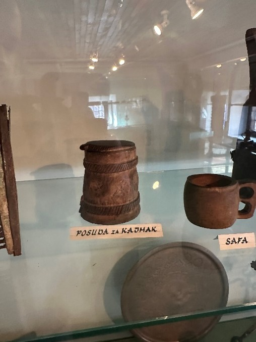
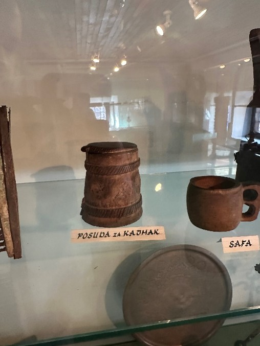
 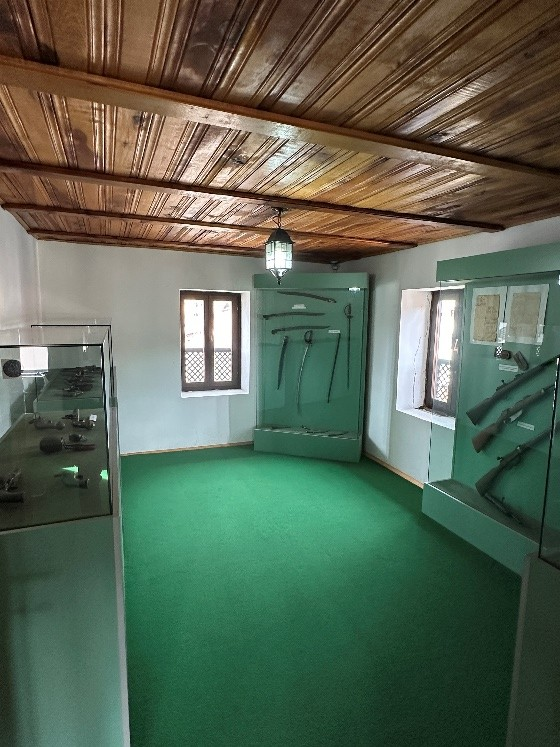
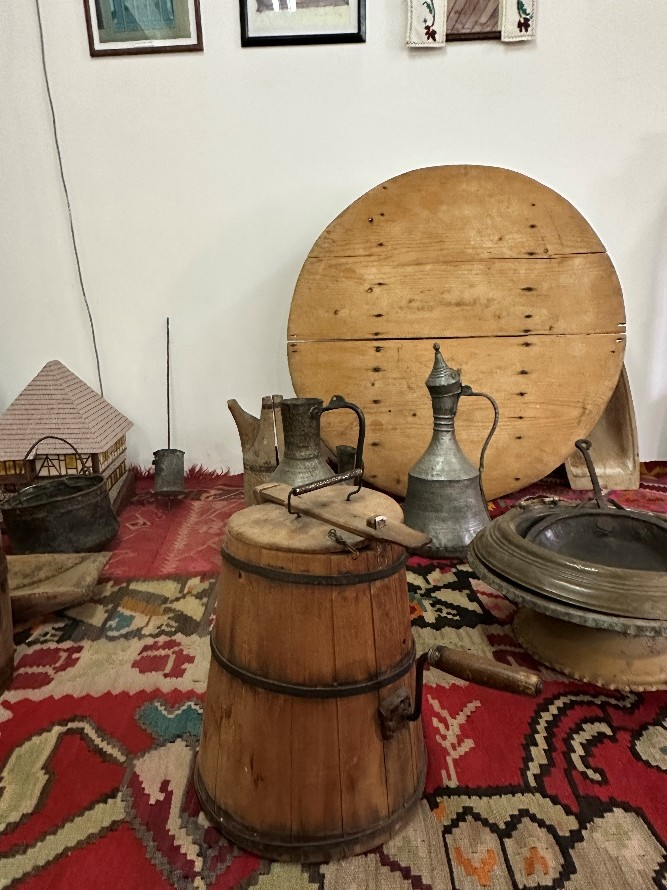
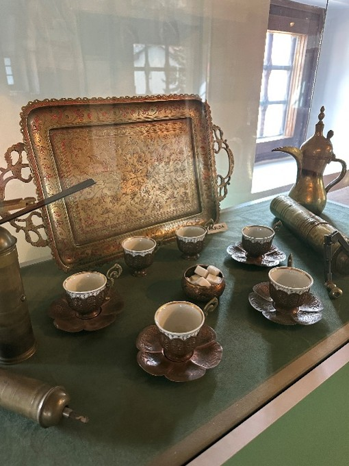
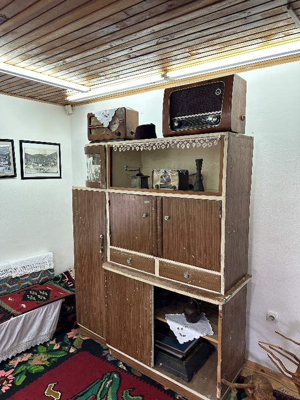
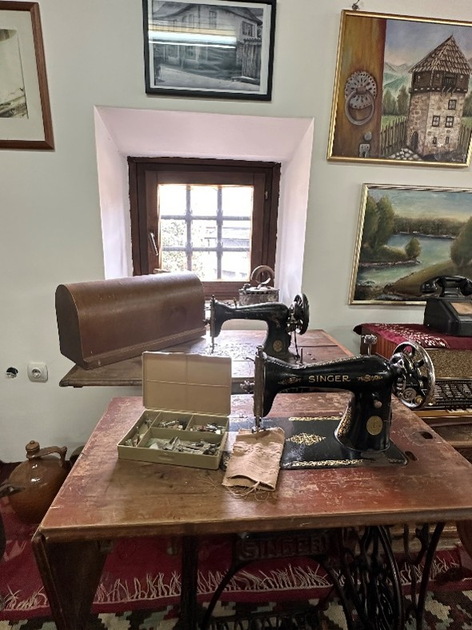
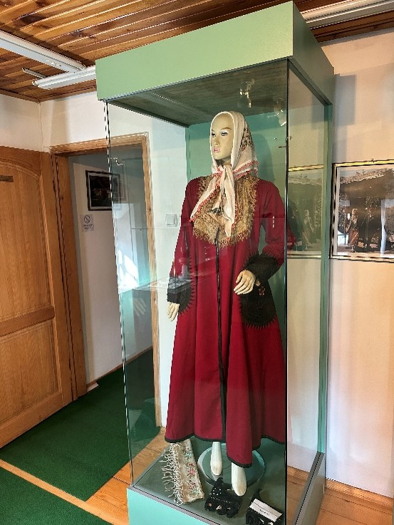
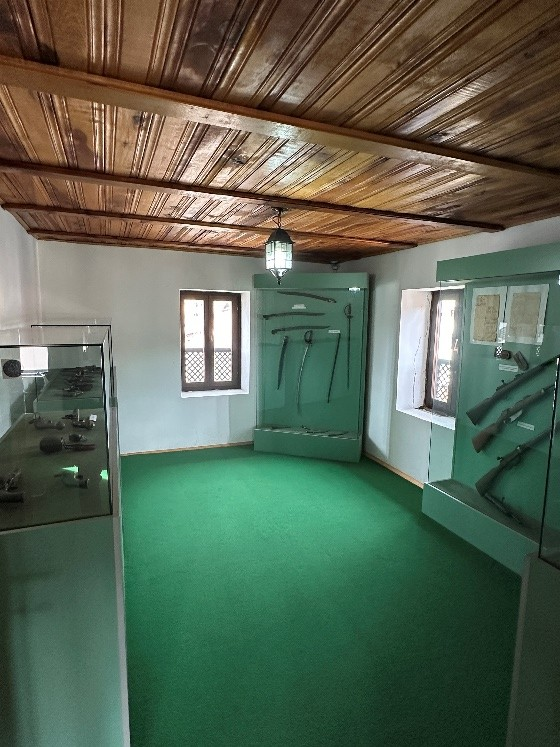
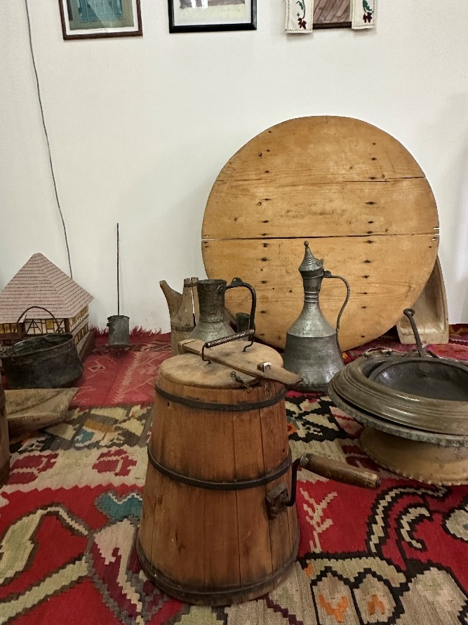
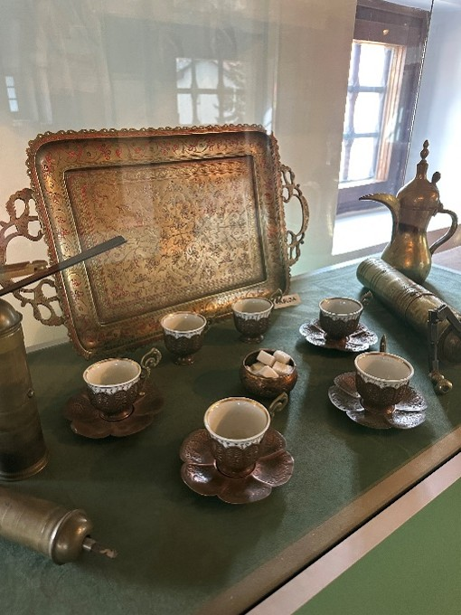
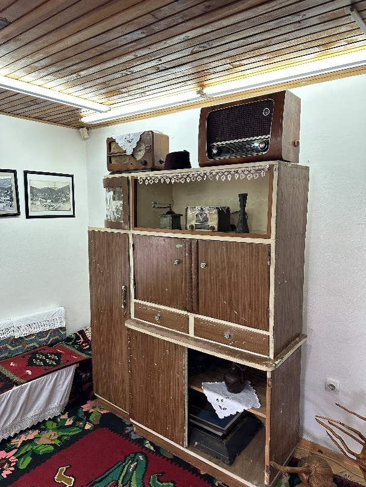
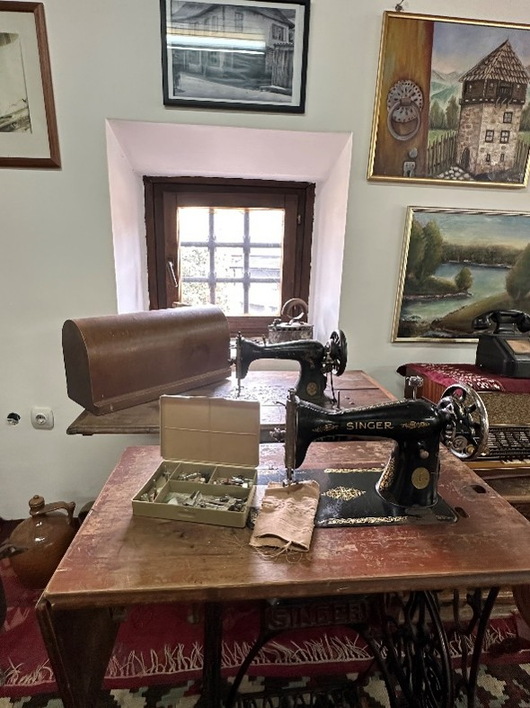
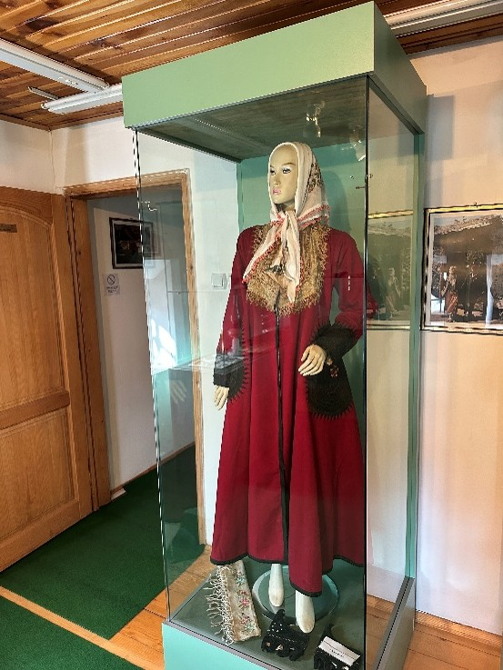